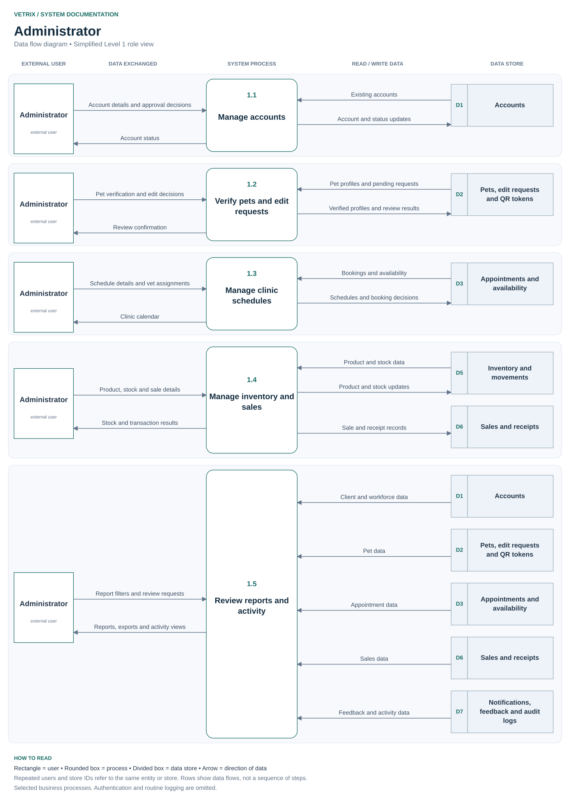
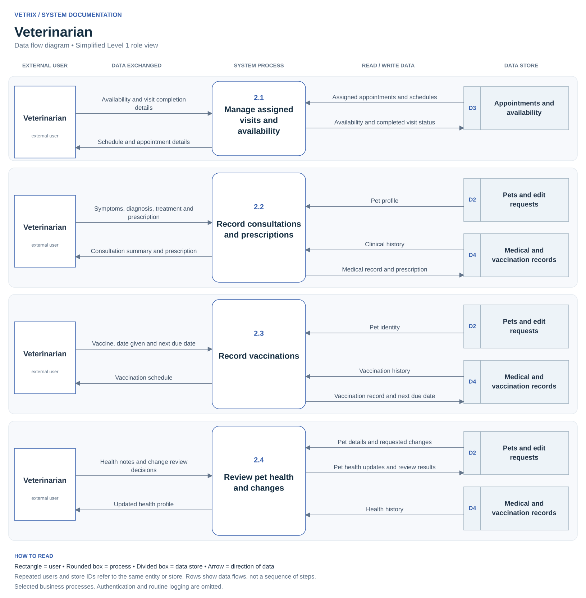
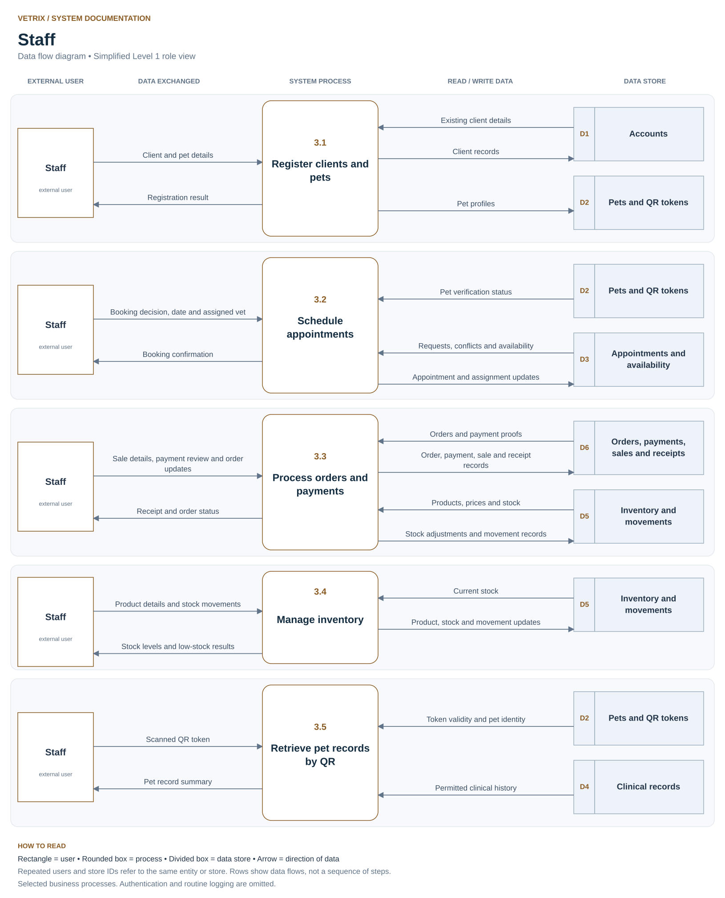
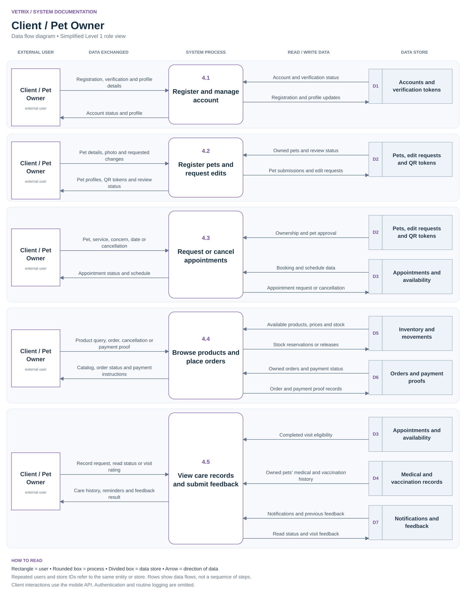

Administrator



Veterinarian



Staff



Client / Pet Owner



Four separate role views. Follow the labeled arrows to see what each user submits, how the system processes it, and which records are read or updated.



